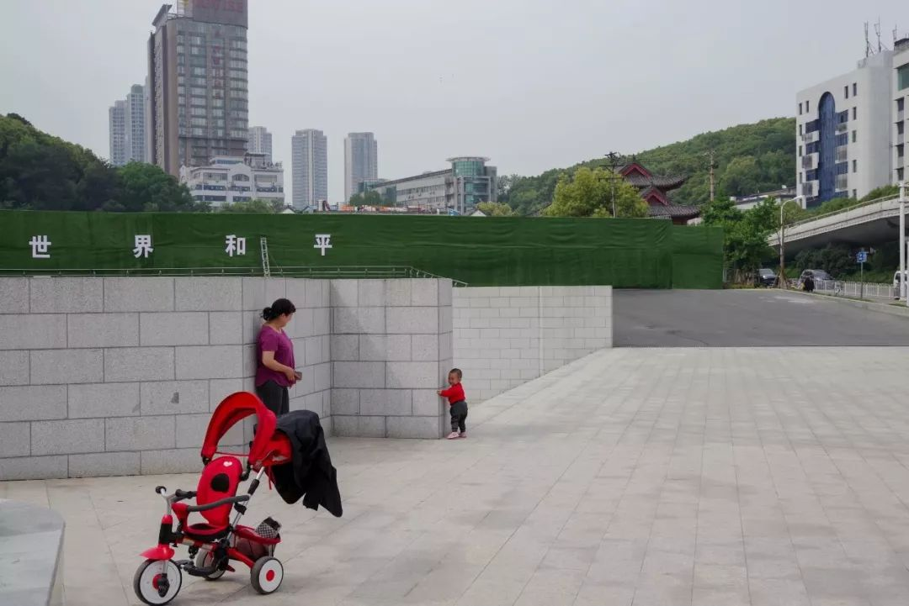
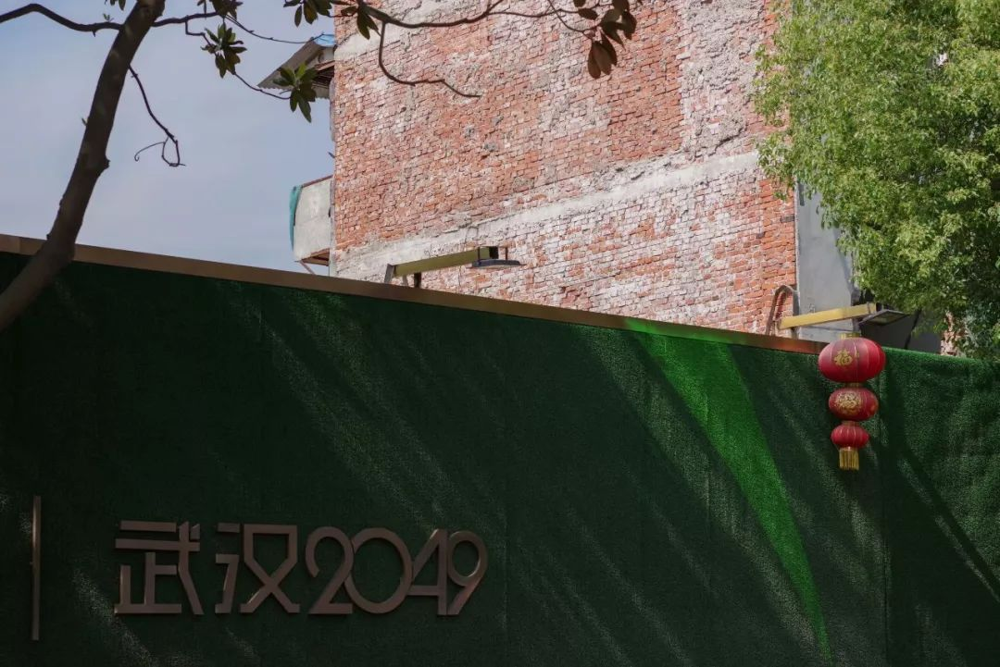

躬逢盛世，度日如年。
原文链接 备份链接 2020年1月28日。 农历正月初四。 武汉封城第六天。 天门封城第五天。 回来一周了。不出所料，疫情正处于缓慢爬坡期，病毒也越来越狡猾，潜伏期症状趋于复杂和多样化。不出意外，2月份才是此役关键和转折所在，疫区也还得封 …

2020年2月6日。
农历正月十三。
武汉封城第十五天。
天门封城第十四天。
闹哄之后，豆瓣日记今天被暂停使用了。这个消息居然在豆瓣引发了斯德哥尔摩综合症般的辩论。世风日下，文青们都被训练得在大是大非面前排队站位了。豆油犬火，说日记没法更了，你的疫中笔记怎么办啊——倘若不嫌弃我的公号？（手动狗头） 她的疫中笔记真的很棒，我上次还发了个票圈说相形见绌我这每天写的都是神马鬼。
今天下雨降温。也好，阳光灿烂太不合时宜了。就像“****到了最危险的时候”，你不“万众一心****前进”，反而在一旁指手画脚妖言惑众，活该封你的号！是大过年吃得不够饱，还是睡得不够香？你是被病毒感染，还是战斗在一线？都没有你有什么资格在这里写日记？是电影不好看，还是游戏不好玩？你以为你打出来的字就是值得被记录的？8亿中国网民都像你这么无组织无纪律瞎折腾，那中国不就乱套了？好那么今天不废话，就发一组不合时宜的照片吧。
估计少有人知晓，江城武汉从清末开埠，一直到改革开放初期，都是中国GDP前五的大城市，用现在的话说，就是一线城市。改开后，一度受政策影响，被沿海地区城市赶超。风水轮流转，现今得乘区位优势的武汉终于奋起直追，更借2019年10月份举行世界军人运动会的契机，将整个城市进行了一场“整容”似地大改造。期间，武汉全城几乎都被这种绿皮的围墙包裹，深藏着复兴大武汉的使命（MAKE WUHAN GREAT AGAIN）和重回“新一线”的梦想。






万万没想到。


长按二维码向我转账
受苹果公司新规定影响，微信 iOS 版的赞赏功能被关闭，可通过二维码转账支持公众号。
原文链接 备份链接 2020年1月28日。 农历正月初四。 武汉封城第六天。 天门封城第五天。 回来一周了。不出所料，疫情正处于缓慢爬坡期，病毒也越来越狡猾，潜伏期症状趋于复杂和多样化。不出意外，2月份才是此役关键和转折所在，疫区也还得封 …
原文链接 备份链接 KOBE BRYANT 1978-2020 R.I.P. 2020年1月27日。 农历正月初三。 武汉封城第五天。 天门封城第四天。 天真冷啊。虽然疫区今天终于见到了久违的阳光。 可也传来了晴天霹雳的消息：科比坠机罹 …
原文链接 备份链接 （期待你明天的乱炖） 2020年2月5日。 农历正月十二。 武汉封城第十四天。 天门封城第十三天。 按这个新冠病毒14天的潜伏期上限算，今天我们终于可以嘘口气，以示自己解除隐患了。上午还跟伯伯说，我们要不要喝点酒庆祝一 …
原文链接 备份链接 2020年2月4日。 农历正月十一。 武汉封城第十三天。 天门封城第十二天。 今天报道一名叫何辉的武汉医护接送车队志愿者染病身故的消息，几经辟谣，仍未反转——志愿者何辉终是走了，只不过不是网传照片上的那位。他是英雄吗？ …
原文链接 备份链接 这里是大学生的新媒体实验室 ∆ 轮到你了：这是武汉长江日报摄影记者陈卓参与武汉疫情报道的第16天，调岗一年后他被临时抽调参与一线报道。武汉封城前一天，他安顿好家中老小，封城当天和妻子一起返回武汉，开始过这个充满未知与风 …